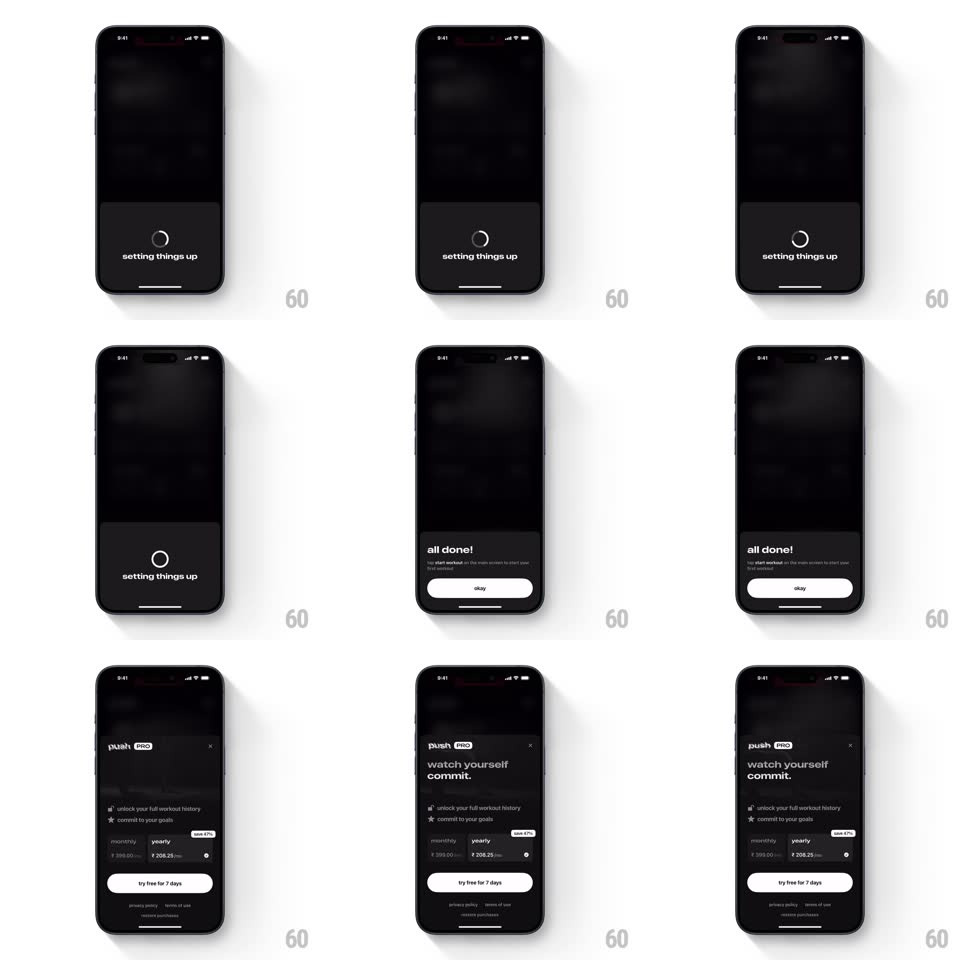

Media
Frame-by-frame

Rebuild this interaction 1:1: Push's setup-to-paywall handoff - a "setting things up" spinner sheet resolves into "all done!", and dismissing it expands straight into the full-screen push PRO pricing screen without a hard cut.

Rebuild this interaction 1:1: Push's setup-to-paywall handoff - a "setting things up" spinner sheet resolves into "all done!", and dismissing it expands straight into the full-screen push PRO pricing screen without a hard cut.
## Integration
Integration: stack-agnostic spec - springs given as stiffness/damping, timed motions as duration + curve; map every value to your framework and animation library of choice.
## Scene
Dark app. Sheet 1: a thin circular spinner with "setting things up". Sheet 2: "all done!" with a subtitle and a white "okay" pill. Then a full-screen dark paywall: "push PRO" with a PRO pill, "watch yourself commit." headline, feature rows (icons + lines), monthly/yearly price options ("save 47%" tag), white "try free for 7 days" button, tiny legal links, X top-right.
## Motion spec
Pattern: spinner resolve, then sheet-to-screen expansion.
- The spinner rotates (1s/rev, linear) under "setting things up" for ~2s, then draws itself closed into a ring and crossfades to the "all done!" content (title pops, spring ~360/18; "okay" fades up 150ms later).
- Tap "okay": the sheet does NOT slide away - it expands: its top edge rises to fill the screen (400ms, ease-out), the dark paywall content fading in inside the growing surface, so the paywall feels born from the confirmation.
- Paywall content staggers: headline first, feature rows 100ms apart, price options, then the trial button last with a single pulse (scale 1 -> 1.03 -> 1).
## Calibration
- Background app content stays blurred/dim until the paywall fully covers it.
- The expansion is one continuous surface - no flicker between sheet and screen.
## Reduced motion
Sheet fades out, paywall fades in.
## Don't miss
- The "all done!" beat must hold at least 800ms before the user can okay it - let the success land.
- The yearly option carries the "save 47%" tag and is pre-selected with a filled radio.